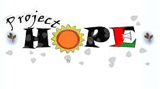

|

Project Hope is my favorite;
they hosted me when I volunteered as an English
teacher in Nablus. They do a wonderful job at very low cost, involving
internationals in offering
English programs, art, drama, and other community-building
activities. Check the web site for details. Thanks to Project
Hope, I had the privilege of working and living with incredible
people, who maintain humanity, pride and steadfastness under the most
difficult circumstances.
Donations are
tax-deductible in Canada. (If you're in the US and have
Canadian-sourced income, donations may also be deductible;
see here,
here
and here
for some information I was able to dig up. Other countries may
have more generous rules about donations to foreign charities.)
|